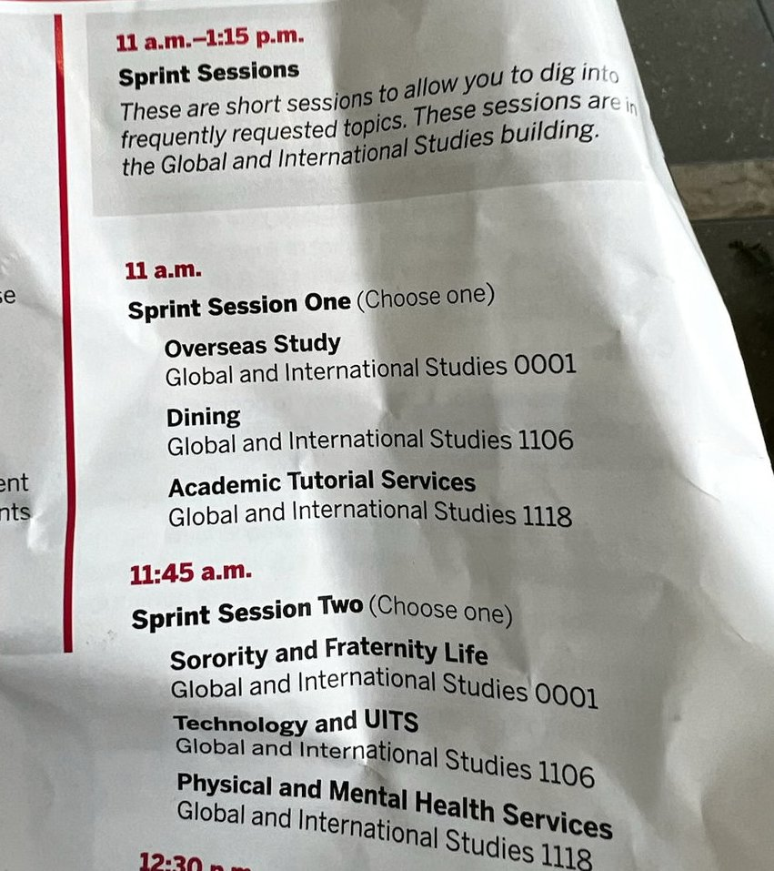

classroom home · freshman · sophomore · senior · @zhao.langxi
IU Luddy · Class of 2027 · year three · Madrid
junior · 2025 to 2026
Fall on campus: presentations, independent study, ServeIT (IU nonprofit tech clinic), electives. Spring 2026: a real semester in Madrid at Complutense (Luddy Study Abroad & HIEP Grant · IU study-abroad funding support). Course titles and terms.

Spring 2026 · Madrid
i did the semester at Universidad Complutense de Madrid through IU Overseas Study. EU politics, Spanish, strategic management, plus the Madrid overseas package. lived there. took the classes. not a brochure trip.
résumé line if you need one: Study Abroad · Universidad Complutense de Madrid (Spring 2026). Scholarship: Luddy Study Abroad & HIEP Grant (IU overseas study support).
OVST-M 496(Overseas Study) Education Abroad in Madrid (study abroad package)SPEA-OS 100(O’Neill / overseas) Undistributed Overseas StudyPOLS-Y 350(Political Science) Politics of the European UnionHISP-S 100(Spanish) Elementary SpanishBUS-J 306(Business · Kelley) Strategic Management and Leadership



Fall 2025 · back on campus first
Before Madrid: presentations for IT professionals, independent study, another ServeIT credit, personal leadership, Latino film. Clinic work and senior year were already on my mind.
INFO-I 301(Informatics) Presentations for IT ProfessionalsINFO-I 390(Informatics) Undergraduate Independent StudyINFO-I 389(Informatics) ServeIT Internship in InformaticsSPH-E 353(School of Public Health) Distribution and Determinants of Chronic DiseasesSPH-L 102(School of Public Health) Personal Leadership DevelopmentLATS-L 111(Latino Studies) Latino Film: An Introduction and Overview
official rules live on IU Overseas Study and the BS Informatics bulletin 2025 to 2026. ask advising. this page is my path, not a planner.